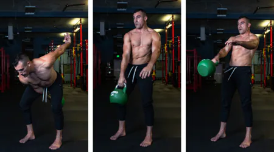
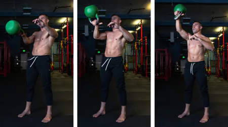
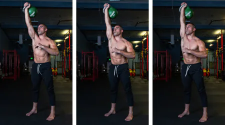

Hi {first_name},
The Kettlebell Snatch is primarily used as a power-endurance exercise. It integrates the lower and upper body, builds the muscles of the lower back, glutes, hamstrings, rhomboids, traps, shoulders, and more.
The Snatch is a progressive movement from the Clean and involves similar mechanics, except now rather than the kettlebell finishing in the Rack Position, the terminal point is in the Overhead Lockout, also known as Fixation Position.
The most challenging part: Intentional positioning and timing of hand insertion to enter into the overhead lockout position (this is pictured during the second row of photos below).



Technique Points for the element of hand insertion:
- Hand insertion during this movement happens at approximately chest level and 10 o’clock
- To redirect the kettlebell back, a slight leaning back, pull from the shoulder + arm, and to a degree trunk rotation takes place. As you "meet" the kettlebell by actively inserting your hand through the window, the shoulder protracts and arm straightens a bit.
- Keep fingers and palm open as you insert your hand
- Kettlebell handle should finish at a 45-degree angle into the heel of the palm
- Once the hand is fully inserted, it's the kettlebell’s momentum that should carry it effortlessly into the Overhead Lockout Position
- Also, aim to bring the kettlebell up the centerline of the body and allow the kettlebell's momentum and the mechanics of the movement to do most of the work to get the kettlebell overhead.
By following some of these tips, you can more safely and effectively perform the Kettlebell Snatch.
I hope you have a fantastic weekend and enjoy your training,
Mike